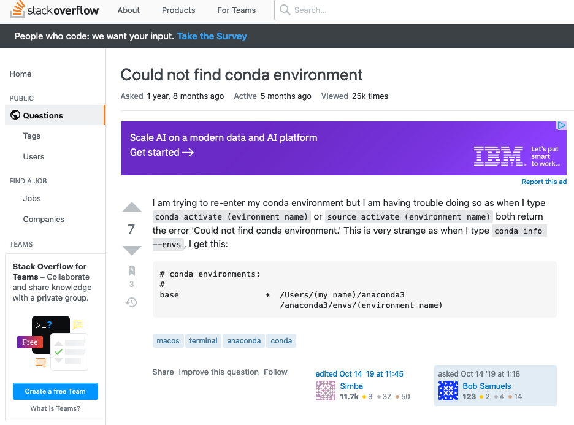
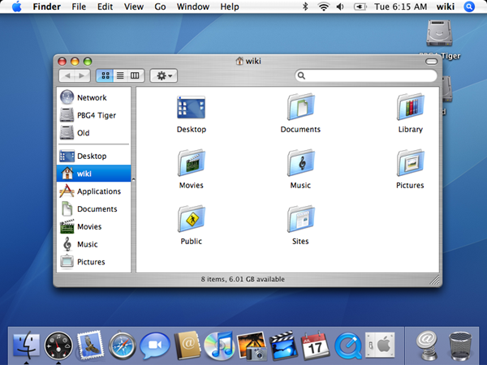
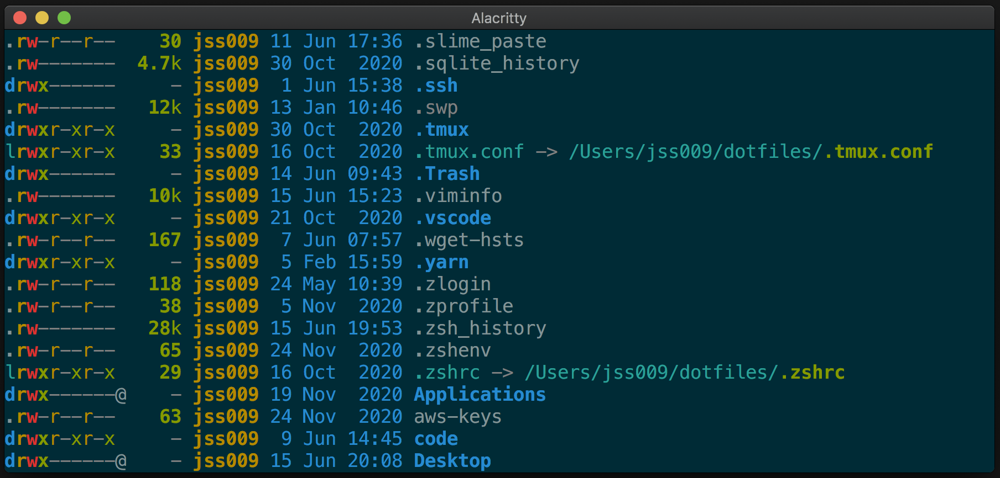
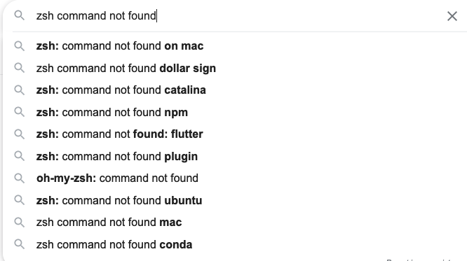
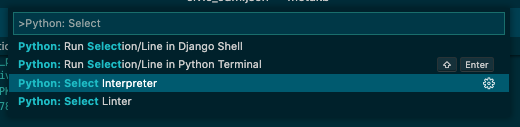
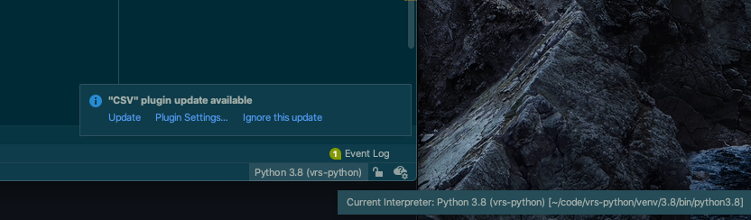

Unraveling the Snake: Python Environment Management in Unix
James Stevenson
2021/06/23
Motivation 1: The Gordian Knot

Motivation 2: I am tired of googling things
Motivation 3: It's good to know this stuff in this business
Outline
History of Unix/Linux/*nix- The Ecosystem
- Python Environments
- Actionable Information
History class
The Beginning: Bell Labs

- Late 1960s: Multics :(
- 1969: Ken Thompson goes rogue
- 1970: Bell Labs acquiesces
- 1971: UNIX is rewritten in C (portable)
Next steps
- 1974-75: Berkeley Standard Distribution
- 1981: AT&T licences UNIX System III for $100
- 1983: DOJ breaks up AT&T, enabling full commercialization of UNIX.
- Late 80s: "Unix Wars." POSIX standard released in 1988.
POSIX: Actually a big deal
- "Portable Operating System Interface"
- Shell script: sort of terrible, sort of powerful
- Several important libraries incl socket.h, time.h, unistd.h
Meanwhile: GNU

- 1983: Richard Stallman announces GNU Project (GNU's Not Unix)
- 1985: Free Software Foundation founded
- 1987: GNU compiler collection (gcc, gdb, GNU bash)
Finally: Linux
- 1991: Linus Torvalds announces the Linux kernel
- Picks up steam in the mid-90s
- Development is ongoing
Today: Mac OS X
Darwin (based on BSD)
Unix/POSIX ecosystem
Small, specialized tools
- E.g. cd, pwd, ln, cat, less, wc, ...
- Chained together (like in Mousetrap)
- Output redirection (for files, streams)
$ ps aux | grep DockerUsers, groups
- Check username:
~ % echo $WHOAMI
$ ls -al /bin/
-rwxr-xr-x 1 root wheel 714736 Sep 21 2020 libCoreStorage.dylib
drwxr-xr-x 14 root wheel 448 Jul 9 2020 dtrace
Everything is a file!
File system
Tree-like
Defined (for Linux) in FHS
Path leaders:
| Root | / |
| Home | /Users/[username]/ or ~/ |
| Current (relative) | ./ or no leading slash |
| Parent (relative) | ../ |
File system: symbolic links

$ ln -s /path/to/source /path/to/target
Aside: reminder about compiling C
Preprocess -> compile -> assemble -> link
Binaries and libraries are separate!
Where stuff goes: root
| /bin/ | executable binaries (not a recycling bin) |
| /lib/ | libraries (not liberals) |
| /dev/ | devices (not developers) |
| /etc/ | configs and DBs [poorly named] |
| /sbin/ | uhhh sort of just /bin/ |
Where stuff goes: root (cont)
| /opt/ | applications that aren't organized in unix "style" (not in MacOS) |
| /usr/ | non-critical applications, accessible to all users [poorly named] |
Home folder
/Users/[your username]/, ~/
- Configs ("dotfiles")
- Also Documents, Desktop, Music, etc
- Owned by user
Three misc. notes
- "unix organization"
- /bin/, /usr/bin/, /usr/local/bin/, + individual packages
- packages often have bin/ and lib/ directories
- Capitalized first letter == MacOS thing
- /Applications, /Library, /Volumes, ~/Documents, ~/Desktop
- /usr/ != /Users/
The shell
- ~Definition: an interface program run by a terminal (emulator)
- bourne shell, bash, zsh in newer MacOS versions
- Interactive vs non-interactive
- Login vs non-login
Suggested google: "What is the difference between Terminal, Console, Shell, and Command Line?"
Suggested google: "What are login and non-login shells?"
The shell: variables
Per-process:
$ myvar=99
$ echo $myvar
99
Environment:
$ export myvar="abc"
$ printenv | grep myvar
myvar=abc
The shell: config files
| kind | file | purpose |
|---|---|---|
| All | ~/.zshenv | environment variables ($EDITOR) |
| login | ~/.zlogin or ~/.zprofile | |
| interactive | ~/.zshrc | aliases, utilities, options |
.zshenv -> .zprofile -> .zshrc -> .zlogin
The shell: command resolution
$PATH variable
~ % echo $PATH
/Users/jss009/.pyenv/versions/3.7.2/bin:/usr/local/opt
/python@3.8/bin:/Users/jss009/Library/Python/3.8/bin:
/Users/jss009/.cargo/bin:/usr/local/sbin:/Users/jss009/
.ebcli-virtual-env/executable:/Users/jss009/.cargo/bin
~ % which python
/usr/bin/python
Homebrew
- OS-wide package manager
- Typically straightforward, but breadth can lead to weird errors
- Locate packages within /usr/local/Cellar/, and binaries symlinked into /usr/local/bin AND /usr/local/opt
Here be monsters: Python environments
System Python
- Core binary: /usr/bin/python
- Deprecated (2.7)
Actual Python
Binary:
| /usr/bin/python3 | if installed w/ xcode |
| /usr/local/bin | if installed via IDLE |
| ~/Library/Python/3.X/ | if installed for user only |
Python modules
| stdlib | [python]/lib/python3.X/ |
| PIP-installed | [python]/lib/python3.X/site-packages/ |
Managing software requirements
- Package manager: retrieve user-created libraries from remote repo
- Dependency manager: enforcing correct versions of binaries and libraries
- Environment manager: work within individual software feifdoms with specific versions of libraries
- Python version manager: use specific Python versions depending on project needs
Toolkit options
| PIP | Package | Built-in. Installs to [python]/lib/site-packages |
| Conda | Package/environment/depencency/version | Installs to ~/opt/ |
Toolkit options, cont.
| venv, virtualenv | environment | Installs and provides activation scripts within project dir |
| pyenv | version | Located in ~/.pyenv/, uses 'shims'/script magic in ~/.profile |
Toolkit options, cont.
| pipenv | environment/dependency/version (sort of) | Located in ~/.local/share/virtualenvs |
New hotness?
- Poetry??
- PDM??
Actionable information
$PATH is the root of all evil
$PATH issues are the most common reason for missing commands or failed installs
Make `echo $PATH` readable
~ % tr ':' '\n' <<< '$PATH'
Shortcut (in ~/.zshrc):
~ % alias printpath="tr ':' '\n' <<< '$PATH'" #"
Clean up your $PATH
Check the usual suspects:
- ~/.bashrc
- ~/.bash_profile
- ~/.login
- ~/.zshrc
- ~/.zprofile
- ~/.zlogin
Clean up your $PATH
In .zshenv or .zshrc:
path+=('/Users/jss009/.cargo/bin') # append
path=('/Users/jss009/.rvm/bin') # prepend
export PATH
Use environment managers in every major project
- Good for mental health and well-being
- Good for reproducibility! [1]
What is a "major project"?
- Something that someone else might want to run again (i.e. a publication)
- Something that you might want to run again?
- Any tool intended for wider use
Which to use?
pipenv is probably fine!
~ % python3 -m pip install pipenv # only need to do once
~ % cd to/your/project
~ % pipenv shell
(project) ~ % which python # now in a self-contained environment!
/Users/jss009/.local/share/virtualenvs/project-lsdkfdf/
IDEs make it easy, too
 Troubleshooting PIP
~ % which python3
~ % which pip # or which pip3
~ % pip -V
~ % pip show requests # or any other package
Dealing with Conda
- Retrieves recipes from channels (CondaForge, BioConda)
- Multiple install options, but you should just use Miniconda
Manage Python3 with Homebrew
~ % brew install python3
~ % brew link python3
Check for stowaways:
~ % brew list | grep python
Manage multiple Python3 versions with Homebrew
~ % brew install python # install 3.9
~ % brew install python@3.7
~ % brew install python@3.8
Links Python 3.9 (newest) to /usr/local/bin, but also adds 3.7 and 3.8 to /usr/local/opt
~ % ll /usr/local/opt | grep python
lrwxr-xr-x 26 jss009adm 26 May 16:49 python -> ../Cellar/python@3.9/3.9.5
lrwxr-xr-x 26 jss009adm 26 May 16:49 python3 -> ../Cellar/python@3.9/3.9.5
lrwxr-xr-x 26 jss009adm 26 May 16:49 python@3 -> ../Cellar/python@3.9/3.9.5
lrwxr-xr-x 29 jss009adm 22 Jun 16:10 python@3.7 -> ../Cellar/python@3.7/3.7.10_3
lrwxr-xr-x 28 jss009adm 5 Nov 2020 python@3.8 -> ../Cellar/python@3.8/3.8.6_1
lrwxr-xr-x 26 jss009adm 26 May 16:49 python@3.9 -> ../Cellar/python@3.9/3.9.5